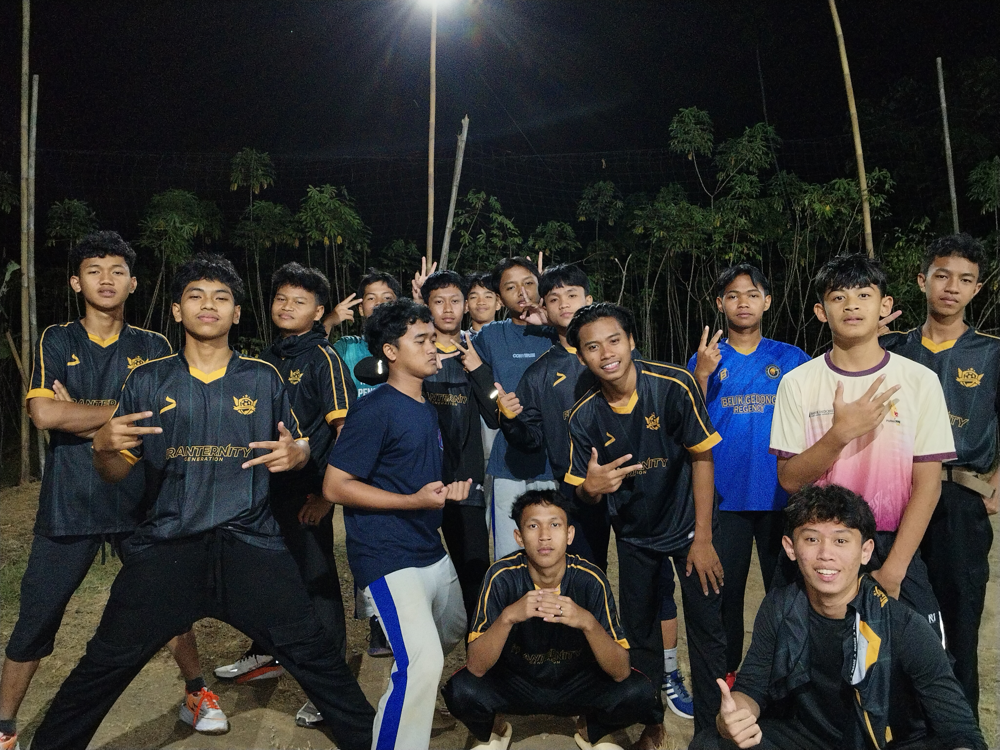
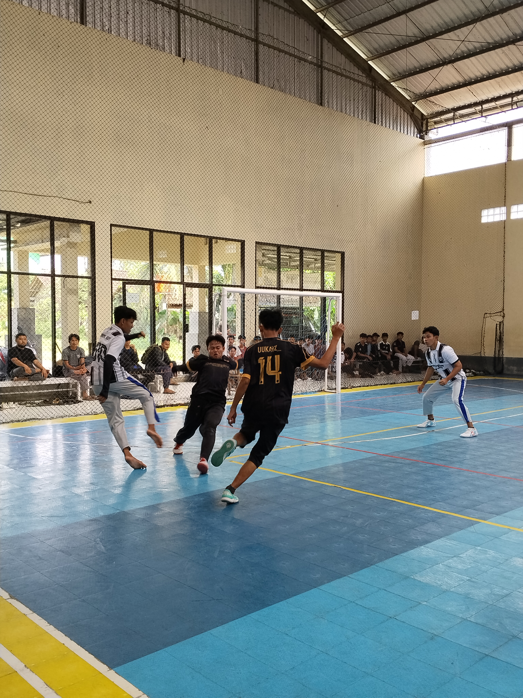
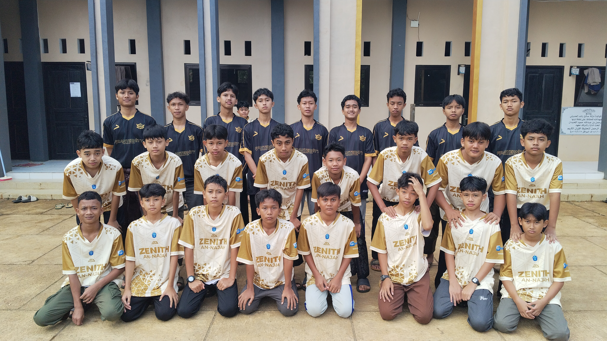
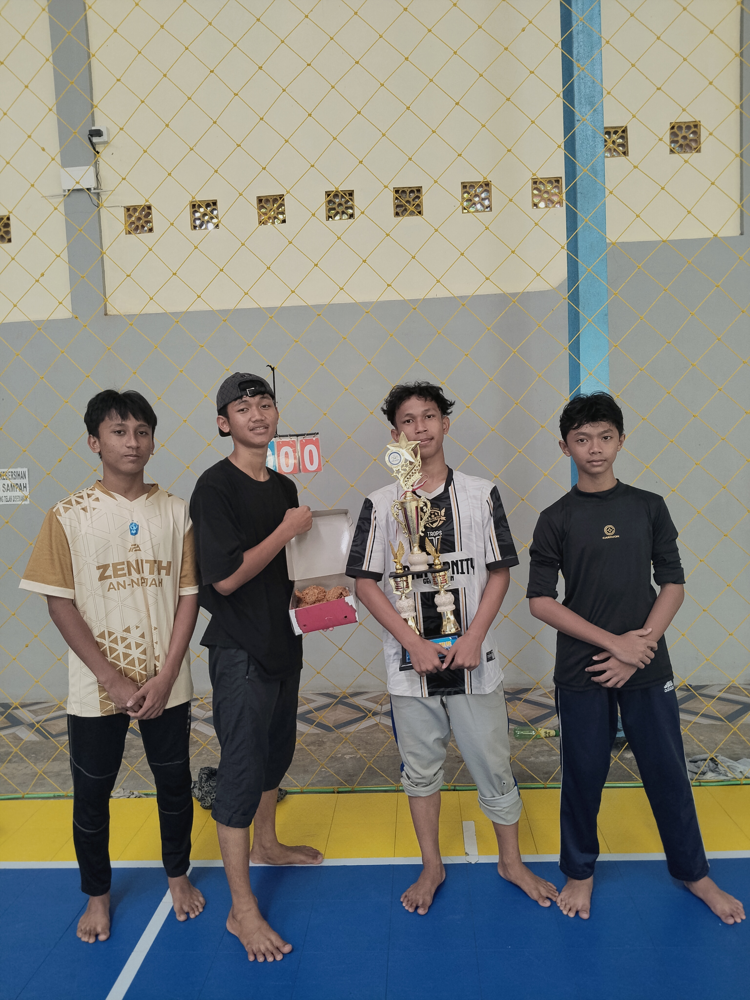

2026
Vol.
Vol.
Bersama Teman
Kegiatan Lomba Voli di Masyarakat
Mengikuti kegiatan lomba voli bersama teman dalam pertandingan antar-RW di Sinduraja, Purbalingga.
Catatan Kegiatan
Beberapa momen yang saya simpan sebagai bagian dari cerita, pengalaman, dan kebersamaan bersama teman-teman.
Dokumentasi

Mengikuti kegiatan lomba voli bersama teman dalam pertandingan antar-RW di Sinduraja, Purbalingga.

Bermain futsal melawan sekolah lain dan menikmati pengalaman bertanding bersama teman.

Salah satu momen sederhana bersama teman yang menjadi bagian dari kenangan di tahun ini.

Momen saat meraih juara 2 dalam pertandingan futsal bersama tim.